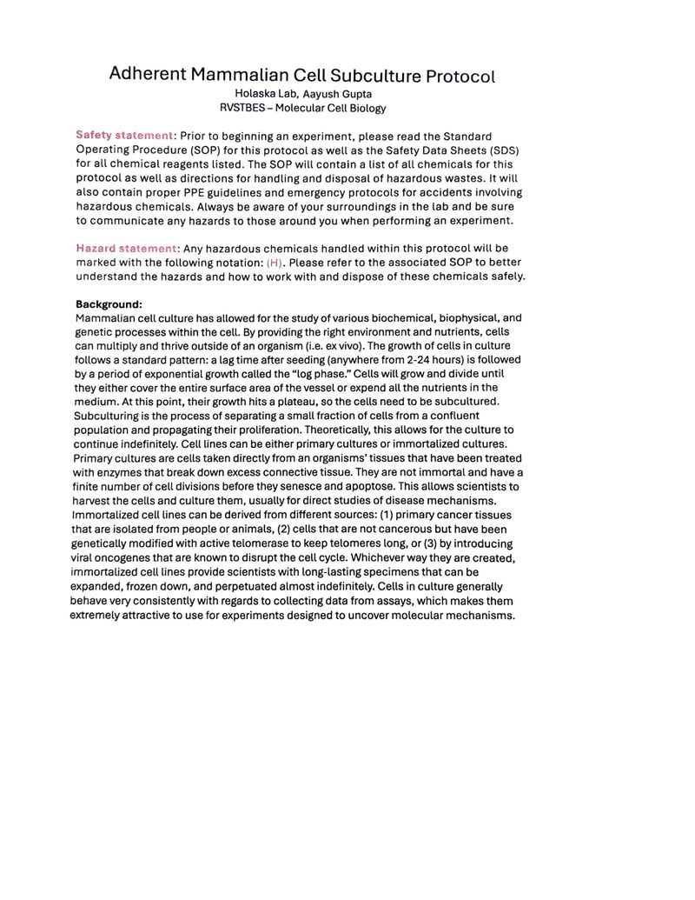

Cell culture
Adherent Mammalian Cell Subculture Protocol
How to maintain and passage adherent mammalian cell lines, such as the HeLa and C2C12 cells used in this research: detaching cells with trypsin, counting them and reseeding them at a set density. Includes a reference table of seeding densities and volumes for common culture vessels.